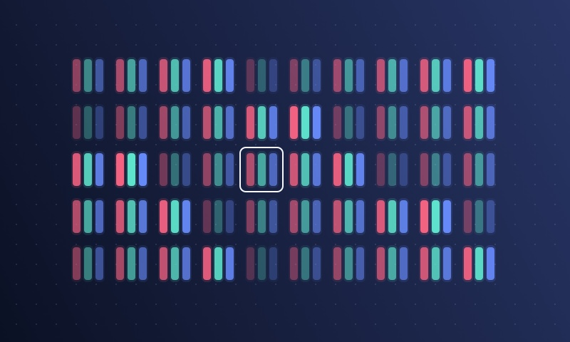

How it works
The video adapter sends a frame as a signal. The monitor receives it and displays the frame.
- Video adapterTurns a rendered image into a video signal.
- Video interfaceCarries the signal via HDMI, DisplayPort, or a compatible USB-C port.
- Display controllerProcesses the incoming signal, scales the image if needed, and sends pixel values and timing information to the panel.
- PanelChanges the light intensity at each pixel to display the frame.
